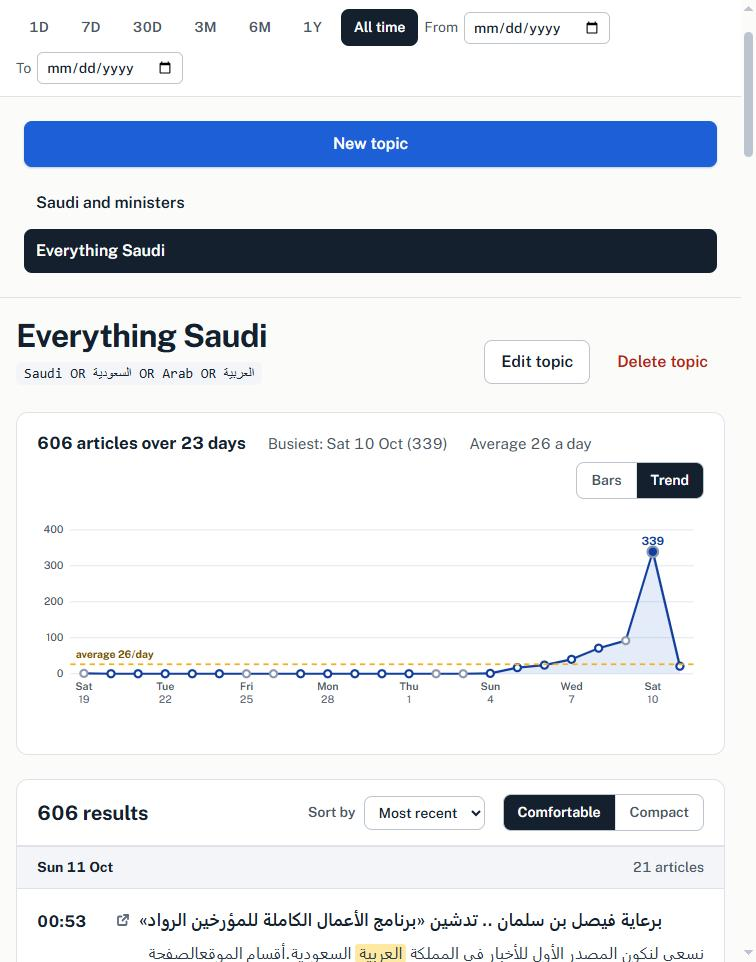
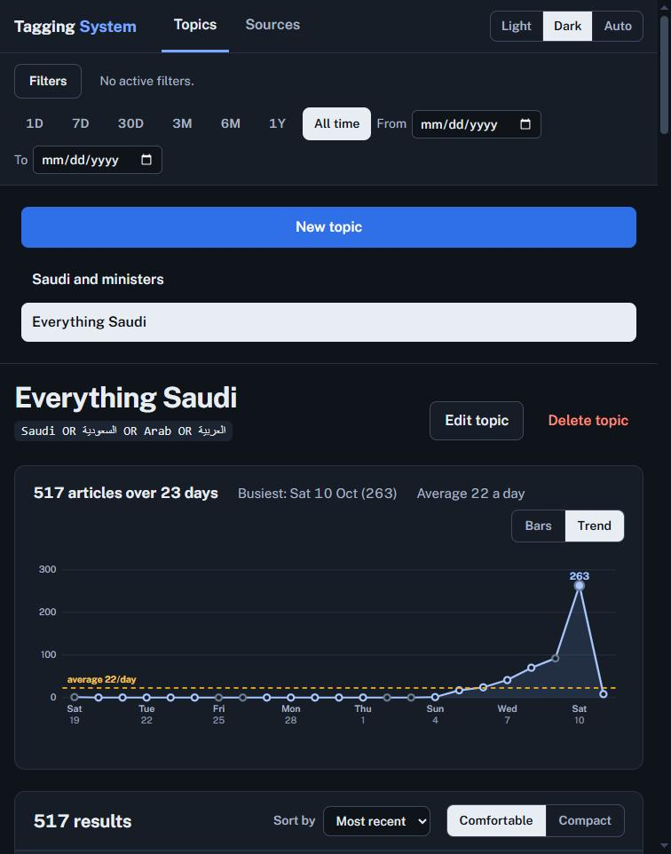
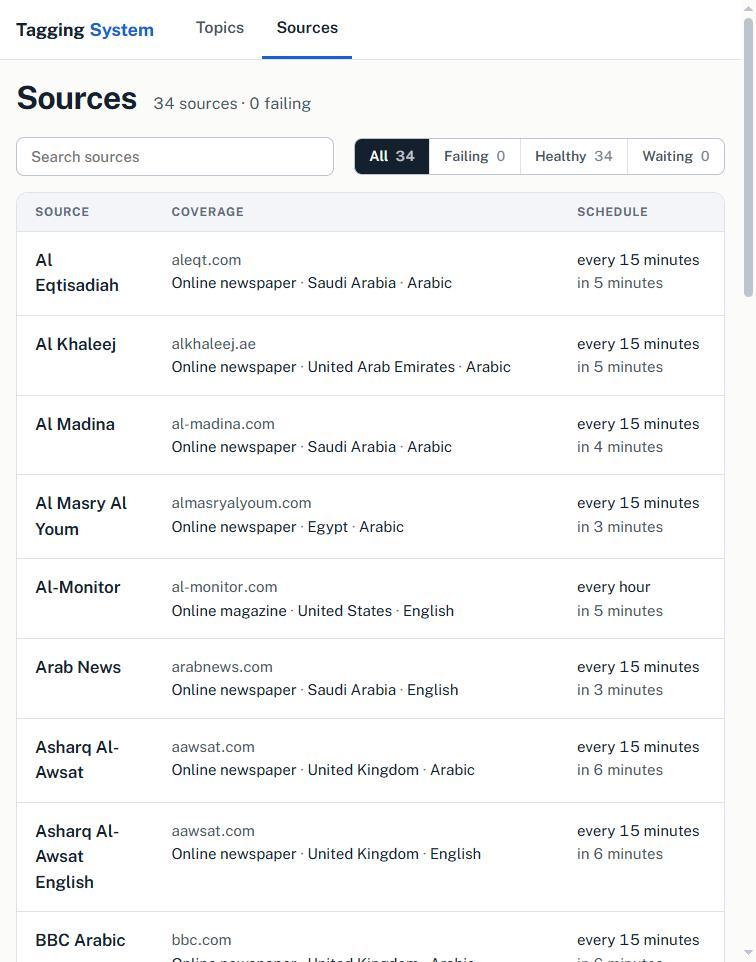

Media monitoring for Arabic and English news.
Save topics as boolean queries, let a scheduled crawler read the outlets you care about, and read what was published, when, and from where. Built around a Talkwalker-style query language and Arabic-first search.



What it does
Boolean query engine
AND OR NOT, phrases, wildcards, NEAR/n proximity and field filters, compiled to OpenSearch with live validation and error positions.
Arabic-first search
Arabic orthographic normalisation at index and query time, so spelling variants match, with proper right-to-left rendering next to English.
Scheduled crawler
RSS, Atom and news sitemaps, per-source intervals, exponential backoff, article extraction that rejects site chrome, and a health view of every source.
Filters and facets
Source type, country, language and domain, each with counts that follow the other filters, searchable beyond the top 20 values.
Charts that answer something
Articles per day (or week, or month on long spans) with the average, the busiest day and how each day compares. Click a day to read only that day.
Built test-first
The query language, API, crawler and UI are covered by an automated test suite, written before the code.
Query language
("budget" OR "الميزانية") NEAR/8 (deficit OR عجز OR spending)
AND sourcetype:ONLINENEWS_NEWSPAPER AND sourcecountry:sa
NOT sportsRun it
git clone https://github.com/MohamedSayedK/tagging-system.git
cd tagging-system
npm install
docker compose up -d # OpenSearch
npm run init-index
npm run worker # crawl sources.yaml on a schedule
npm run api # API on 127.0.0.1:3000
npm run web # UI on http://localhost:5173The live demo is this same interface answering from a bundled snapshot of real crawled headlines and of the registry of news outlets found so far (the Registry tab), with no server: nothing to install. Running the full system yourself (OpenSearch, the crawler and the API) is what the commands above do.